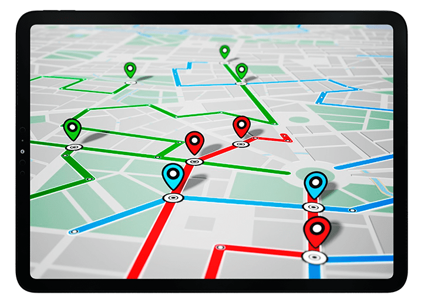

Sistema de coordenadas
tridimensional
Video explicativo
Definición general:
Los planos de 3 ejes vienen del sistema de coordenadas tridimensional,
que se usa para ubicar
puntos en el espacio.
En lugar de solo dos dimensiones
(como en una hoja), aquí trabajas con tres ejes:
- Eje X (adelante y atrás)
- Eje Y (izquierda y derecha)
- Eje Z (arriba y abajo)

Octantes:
Los octantes son las ocho regiones en las que se divide el espacio
tridimensional cuando los tres ejes coordenados (X, Y, Z) se cruzan en el origen.
Cada octante se define según si las coordenadas de un punto son positivas o negativas.
En total hay 8 combinaciones posibles de signos, por ejemplo:
(+, +, +), (+, +, -), (+, -, +), etc.
El primer octante es donde todas las coordenadas son positivas,
es decir, los puntos tienen la forma:
(x,y,z) con x > 0, y > 0, z > 0.

Cómo ubicar puntos en estos planos:
Para ubicar un punto en un sistema de tres ejes, comienza en el origen (0,0,0) y muévete primero
sobre el eje X según el primer número del punto: si es positivo, hacia la derecha; si es negativo, hacia la izquierda.
Luego desplázate en el eje Y según el segundo número: si es positivo, hacia adelante; si es negativo, hacia atrás.
Y finalmente ajusta la altura en el eje Z con el tercer número: si es positivo, subes y si es negativo, bajas.
Para el punto (3, -2, 4):
Avanzas 3 en X (derecha)
Luego -2 en Y (hacia atrás)
Luego subes 4 en Z
Y ahí marcas el punto.
Usos:
GPS:
-
El sistema GPS utiliza coordenadas tridimensionales para determinar la posición exacta de un objeto o persona en la Tierra.

Los satélites calculan:
- Latitud → posición norte-sur
- Longitud → posición este-oeste
- Altitud → altura sobre el nivel del mar
Gracias a esto, aplicaciones como Google Maps o los
sistemas de navegación de vehículos pueden:
- Mostrar rutas precisas.
- Calcular distancias reales.
- Guiar aviones, barcos y automóviles.
- Localizar teléfonos y dispositivos.
Construcción:
-
En construcción, el sistema tridimensional ayuda a representar estructuras de forma exacta antes y durante la obra.
 Se utiliza para:
Se utiliza para:
- Diseñar edificios en modelos 3D.
- Medir alturas, profundidades y distancias.
- Calcular inclinaciones y niveles, del suelo por ejemplo.
- Ubicar columnas, tuberías y cables con precisión.
- Crear planos digitales y simulaciones.
- Programas como AutoCAD y Blendersito permiten trabajar con coordenadas tridimensionales para visualizar cómo quedará una
construcción antes de comenzar (lo que al fin y al cabo es muy útil).